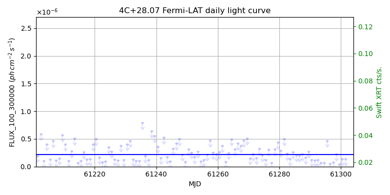
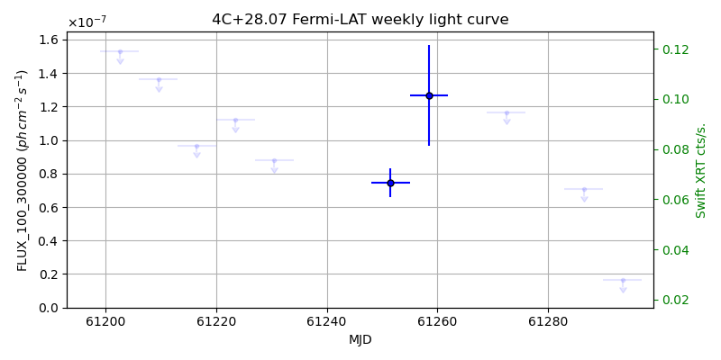
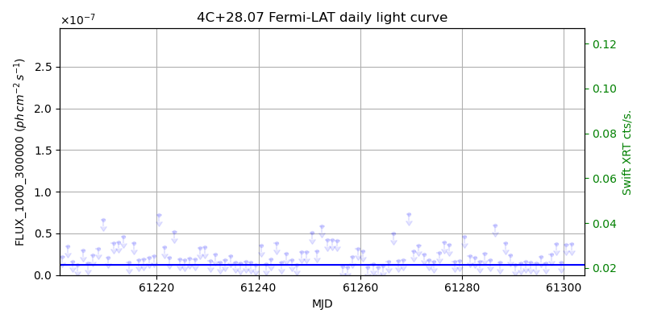
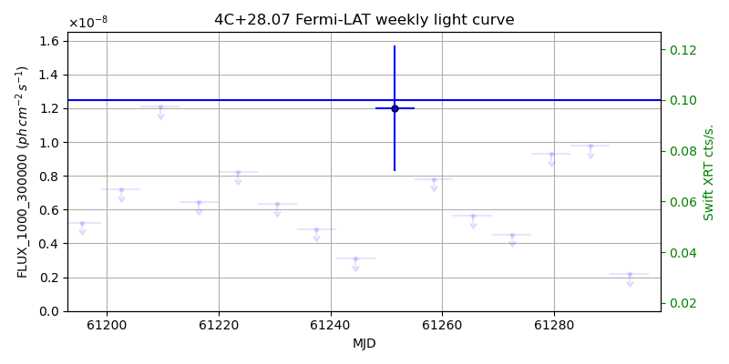

LAT Lightcurve site: https://fermi.gsfc.nasa.gov/ssc/data/access/lat/msl_lc/source/4C_p28d07
Swift site: https://www.swift.psu.edu/monitoring/source.php?source=4C+28.07
NED: Query
Time of last update of this page: UT: 2026-09-19 15:12 (MJD: 61302.634)
| Property | Value |
|---|---|
| R.A. | 2:37:52.32 |
| Dec. | 28:48:07.2 |
| z | 1.213 |
| 3FGL SpectrumType | LogParabola |
| 3FGL PL Index | |
| 3FGL Flux_100_300000 | 2.18e-07 1 / (s cm2) |
| 3FGL Flux_1000_300000 | 1.25e-08 1 / (s cm2) |
| 3FGL Flux >200 GeV | 2.06e-12 1 / (s cm2) |
| 3FGL Extrap. Crab >200 GeV | 0.01 |
| 3FGL Flux After EBL Absorption >200GeV | 1.61e-14 1 / (s cm2) |
| 3FGL EBL Crab Fraction >200GeV | 0.00 |

| MJD | dMJD | Flux | dFlux | Frac3FGL | FracCrab>200GeV | EBLFracCrab>200GeV |
|---|---|---|---|---|---|---|
| 61297.50 | 0.50 | 7.35e-08 | 0.00e+00 | 0.00 | 0.00 | 0.00 |
| 61298.50 | 0.50 | 2.26e-07 | 0.00e+00 | 0.00 | 0.00 | 0.00 |
| 61299.50 | 0.50 | 4.57e-08 | 0.00e+00 | 0.00 | 0.00 | 0.00 |
| 61300.50 | 0.50 | 1.35e-07 | 0.00e+00 | 0.00 | 0.00 | 0.00 |
| 61301.50 | 0.50 | 1.35e-07 | 0.00e+00 | 0.00 | 0.00 | 0.00 |

| MJD | dMJD | Flux | dFlux | Frac3FGL | FracCrab>200GeV | EBLFracCrab>200GeV |
|---|---|---|---|---|---|---|
| 61265.50 | 3.50 | 1.87e-07 | 0.00e+00 | 0.00 | 0.00 | 0.00 |
| 61272.50 | 3.50 | 1.17e-07 | 0.00e+00 | 0.00 | 0.00 | 0.00 |
| 61279.50 | 3.50 | 1.74e-07 | 0.00e+00 | 0.00 | 0.00 | 0.00 |
| 61286.50 | 3.50 | 7.06e-08 | 0.00e+00 | 0.00 | 0.00 | 0.00 |
| 61293.50 | 3.50 | 1.63e-08 | 0.00e+00 | 0.00 | 0.00 | 0.00 |

| MJD | dMJD | Flux | dFlux | Frac3FGL | FracCrab>200GeV | EBLFracCrab>200GeV |
|---|---|---|---|---|---|---|
| 61297.50 | 0.50 | 2.48e-08 | 0.00e+00 | 0.00 | 0.00 | 0.00 |
| 61298.50 | 0.50 | 3.71e-08 | 0.00e+00 | 0.00 | 0.00 | 0.00 |
| 61299.50 | 0.50 | 1.57e-08 | 0.00e+00 | 0.00 | 0.00 | 0.00 |
| 61300.50 | 0.50 | 3.68e-08 | 0.00e+00 | 0.00 | 0.00 | 0.00 |
| 61301.50 | 0.50 | 3.71e-08 | 0.00e+00 | 0.00 | 0.00 | 0.00 |

| MJD | dMJD | Flux | dFlux | Frac3FGL | FracCrab>200GeV | EBLFracCrab>200GeV |
|---|---|---|---|---|---|---|
| 61265.50 | 3.50 | 5.63e-09 | 0.00e+00 | 0.00 | 0.00 | 0.00 |
| 61272.50 | 3.50 | 4.52e-09 | 0.00e+00 | 0.00 | 0.00 | 0.00 |
| 61279.50 | 3.50 | 9.30e-09 | 0.00e+00 | 0.00 | 0.00 | 0.00 |
| 61286.50 | 3.50 | 9.77e-09 | 0.00e+00 | 0.00 | 0.00 | 0.00 |
| 61293.50 | 3.50 | 2.20e-09 | 0.00e+00 | 0.00 | 0.00 | 0.00 |
--------------------------------------------------------- Using user-supplied coords: 2:37:52.32 28:48:07.2 2000 --------------------------------------------------------- FLWO UT night of: 2026-09-20 Local Sid. @ Midnight: 23:32 Sunset (-15.0) (local, UT): 19:31 02:31 Sunrise (-15.0) (local, UT): 05:04 12:04 Moonrise (local, UT): Moonset (local, UT): 00:13 07:13 Moon phase: 0.64 --------------------------------------------------------- AzTime LSID UT Obj_el Obj_az Mn_el Mn_az Sep. --------------------------------------------------------- 19:31 19:03 02:31 -1.7 53.2 30.5 184.0 126.0 20:01 19:33 03:01 2.7 57.1 29.7 191.5 125.9 20:31 20:03 03:31 8.0 60.8 28.1 198.7 125.7 21:01 20:33 04:01 13.6 64.2 25.8 205.5 125.6 21:31 21:03 04:31 19.5 67.4 22.9 211.9 125.4 22:01 21:33 05:01 25.4 70.4 19.4 217.8 125.2 22:31 22:03 05:31 31.5 73.2 15.4 223.2 125.0 23:01 22:33 06:01 37.7 76.0 11.0 228.1 124.8 23:31 23:04 06:31 43.9 78.8 6.3 232.6 124.6 00:01 23:34 07:01 50.2 81.5 1.5 236.7 124.4 00:31 00:04 07:31 56.5 84.4 -2.6 240.5 124.2 01:01 00:34 08:01 62.9 87.6 -9.5 244.1 123.9 01:31 01:04 08:31 69.3 91.5 -15.1 247.4 123.7 02:01 01:34 09:01 75.7 96.9 -20.8 250.6 123.4 02:31 02:04 09:31 82.0 107.8 -26.6 253.6 123.1 03:01 02:34 10:01 87.0 158.7 -32.5 256.6 122.8 03:31 03:04 10:31 83.9 244.7 -38.4 259.6 122.5 04:01 03:34 11:01 77.8 260.6 -44.5 262.6 122.2 04:31 04:04 11:31 71.4 267.0 -50.5 265.8 121.9 05:01 04:34 12:01 65.0 271.2 -56.6 269.4 121.6 05:04 04:37 12:04 64.4 271.6 -57.1 269.7 121.6 --------------------------------------------------------- Dark hours >55 deg.: 4.67 srcstart (UT): 2026-09-20 07:23 srcend (UT): 2026-09-20 12:03